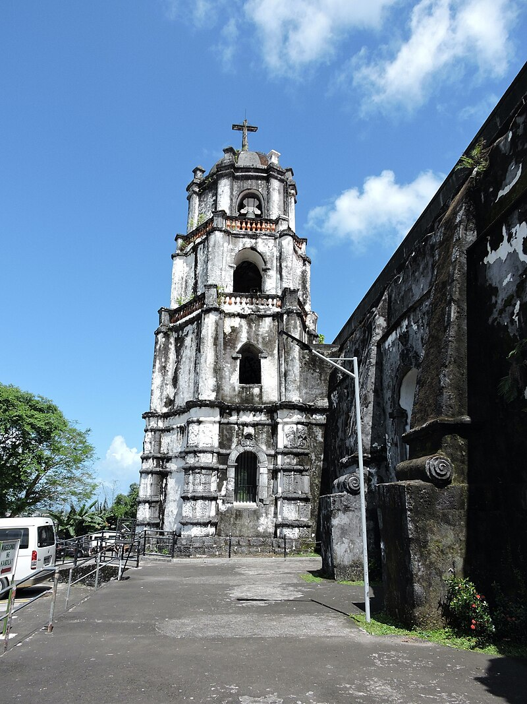

One of the few of Albay’s heritage churches that withstood the effects of Mayon volcano’s eruptions is the Daraga Church or also known as Nuestra Señora de la Porteria Parish Church. Perched on a hill with a commanding view of the majestic Mayon Volcano, Daraga Church stands as a lasting testament of faith, artistry, and resilience of Albayanos.
Built by Franciscan missionaries in 1773 atop a hill, the church offers an unimpeded view of the majestic Mayon Volcano and is renowned for its rich Baroque architecture. Its massive volcanic rock structure features a cruciform layout, an octagonal bell tower, and intricately carved Salomónica columns adorned with vine motifs and ecclesiastical emblems. In 2007, the National Historical Institute declared this site a National Cultural Treasure. A 2012 restoration by the NCCA helped preserve these details using traditional lime wash and native stone, ensuring that Daraga Church remains not only a sanctuary of worship but also a cultural landmark and symbol of enduring heritage.
History
Daraga was founded by residents from Cagsawa who sought refuge from the threat of future eruptions by the Mayon Volcano. Concerned for their safety, they petitioned the Spanish colonial authorities to establish a new settlement and church south of Cagsawa. Their request was approved on June 12, 1772, through a directive from Governor-General Simon de Salazar to the Alcade-mayor of Camarines.
Construction of the current Daraga Church began in 1773 under the guidance of Franciscan missionaries, at a time when Daraga was still a visita or mission station of Cagsawa. The church was strategically built atop a hill in Barangay Santa Maria, offering a commanding view of Mayon Volcano. When Mayon erupted on February 1, 1814, devastating the town and church of Cagsawa, many survivors relocated to Daraga, further cementing the latter’s role as a new religious and community center. Although many believe Daraga Church was built after the eruption as a replacement for Cagsawa Church, historical records confirm it predates the event. The church was formally consecrated to Nuestra Señora de la Porteria (Our Lady of the Gate) in 1854.
During World War II in 1945, Daraga Church suffered significant damage from aerial bombings by joint American and Filipino forces. The post-war renovation incorporated elements of Renaissance Gothic and Mexican Baroque styles. Between 1971 and 1973, further changes were made to align the church’s design with the liturgical reforms of the Second Vatican Council. In 1991, the altar was returned to its original location to restore historical integrity.
To preserve its architectural and cultural legacy, restoration efforts have continued through the years. In recognition of its significance, the National Museum of the Philippines declared parts of the church, including the eastern and western façades, bell tower, and baptistry, as a National Cultural Treasure in 2007. A year later, on October 16, 2008, the National Historical Institute unveiled its official historical marker.
Facts
Daraga Church in 1950Daraga Church is an exquisite example of Churrigueresque architecture, a highly decorative Spanish Baroque style, best seen in its ornate façade. Built using locally sourced volcanic rock, the structure blends natural materials with intricate artistry, symbolizing the resilience and faith of the Albayanos who constructed it. The church’s current white exterior is a result of a protective lime coating, applied during conservation efforts to guard the centuries-old stonework against weathering and erosion.
One of the church’s most striking features is its four Solomonic (salomónicas) columns, rare in Philippine ecclesiastical architecture. These spiral columns adorn the main façade and each holds a medallion carved with one of the four Evangelists, merging biblical iconography with dramatic design. Unlike most Baroque churches, Daraga’s façade lacks traditional vertical pilasters or horizontal cornices, giving it a flowing and unconfined character that feels both ancient and uniquely Filipino.
Adding further depth to its symbolism are engraved religious elements, including:
- Statues of Franciscan saints, reflecting the order that built and served the church.
- Rare ecclesiastical seals, such as:
- The coat of arms of the Franciscan Order.
- The Papal tiara with crossed keys, symbolizing divine authority.
- The five wounds (stigmata) of St. Francis, a mark of humility and sacrifice.
- A Latin inscription above the main arch reads:
"Bene fundata est domus Domini supra firmam petram"
(“Well founded is the house of the Lord on firm rock”), echoing both scripture and the church’s solid foundation on volcanic stone.
The Belfry: Echoes of the Apostles
 Daraga Church BelfryTo the left of the church stands its octagonal bell tower, rising in four graceful tiers and culminating in a dome and cross. The base of the belfry features reliefs of the Twelve Apostles, carved into six of its sides, an artistic representation of the Church’s foundation in apostolic tradition. Each level of the tower narrows upward, symbolizing the church’s spiritual ascent toward heaven, with the sound of its bell once guiding the faithful to prayer and safety.
Trivia
The church’s dedication to Nuestra Señora de la Porteria traces back to Fray Luis de San Jose, a humble Franciscan lay brother who lived in 18th-century Ávila, Spain. Serving as a gardener and porter in a Franciscan convent, Fray Luis reportedly experienced a miraculous encounter with the Blessed Virgin Mary during a devastating flood that spared his life. In thanksgiving, he commissioned an image of the Virgin and placed it at the convent’s entrance, the porteria, where he and others regularly offered their prayers.
This image became a focal point of devotion, especially among the townsfolk who frequented the convent. Over time, reverence for Our Lady of the Gate grew and eventually reached the Philippines through Franciscan missionaries. In 1854, the Daraga Church was formally consecrated in her honor.
Local traditions continue to uphold the Virgin’s significance. During World War II, some residents claimed to see a mysterious light hovering above the church during the bombings, believed by many to be a sign of the Virgin’s protection. Devotees also recount answered prayers for healing, with some offering barefoot pilgrimages up the hill in gratitude to the patroness of Daraga.
Daraga Church vs. Cagsawa Ruins: Twin Survivors
Daraga Church and Cagsawa ChurchOften compared and forever linked by history, Daraga Church and the Cagsawa Ruins stand as powerful symbols of resilience in Albay. While Cagsawa Church was famously destroyed by the devastating eruption of Mayon Volcano in 1814, its surviving belfry has become a haunting reminder of nature’s power. In contrast, Daraga Church, perched strategically on a hill in nearby Barangay Santa Maria, was spared from the lava flows, becoming a refuge for Cagsawa’s displaced parishioners.
This connection forged the twin legacy of the two landmarks: Cagsawa as a symbol of loss and remembrance, and Daraga as a sanctuary and continuation of faith. Together, they tell the story of Albayanos’ strength and their unshakable devotion amidst adversity.
Annual Festivals & Processions
Feast of Nuestra Señora de la Porteria
The biggest annual celebration at Daraga Church, this feast honors the Virgin Mary as the church’s patroness. It features a Solemn Mass, floral offerings, and a procession with the revered image of Our Lady of the Gate. The event gathers devotees who participate in prayers, traditional music, and sometimes barefoot pilgrimages up the hill to the church.
Albay Bikol Festival
Though broader in scope, this festival celebrates Bicolano culture, with Daraga Church often featured in cultural tours, religious events, and traditional performances that highlight the region’s Baroque heritage and Catholic faith.
Pintakasi Festival
While primarily held in Legazpi, this festival celebrates local patron saints and includes processions and masses that often involve pilgrimages or visits to Daraga Church, linking neighboring communities through shared devotion.
Cagsawa Festival
This festival commemorates the destruction of the old Cagsawa Church during the 1814 Mayon eruption. Activities include street dancing, parades, and re-enactments recalling the eruption’s impact and the resilience of the local people. The iconic belfry ruins serve as a backdrop, reminding visitors of nature’s power and the community’s strength.
Holy Week Observances
The Daraga Church witness significant religious activities during Holy Week, including processions, passion plays, and visita iglesia (church visits), where devotees trek between these sacred sites, deepening their faith and connecting with the region’s spiritual heritage.
Pilgrimages
Daraga Church is a pilgrimage site for those devoted to Nuestra Señora de la Porteria, especially during major Marian months like May and October. Pilgrims often come to pray for healing, blessings, or thanksgiving, walking the same paths trodden by generations before them.
Other Posts

Mount Mayon
Mayon Volcano, located in the province of Albay in the Bicol Region of the Philippines, is renowned for its near-perfect symmetrical cone shape. Standing at 2,463 meters (8,081 feet), it is one of the most active volcanoes in the country and a prominent symbol of natural beauty and danger. Its frequent eruptions have shaped both the landscape and the lives of the people living around it, making it a vital part of Bicolano culture and identity.

Farm Plate
If you think Daraga, Albay is only about historic ruins and the iconic Mayon Volcano, think again. This vibrant town is not only rich in heritage—with churches, colonial structures, and landscapes that echo centuries of Filipino history—but also brimming with modern attractions that reflect its growth, creativity, and resilience. And nestled quietly in its scenic hillsides lies one of the most delightful surprises in Bicol: FarmPlate.

Budiao Church Ruins
The first settlers of the town of Daraga came from a place called Budiao. Under the leadership of Juan Salcedo, the Spaniards arrived and established this village. The name "Budiao" is derived from the word "badjao," which means "the greatest," as demonstrated by the "ilustrados" (educated elite) among the spectators of bullfights. In Budiao, there was a designated area for the battle between men and bulls, following a tradition reminiscent of ancient Rome.

Cagsawa Ruins
The Cagsawa Ruins (also spelled as Kagsawa, historically spelled as Cagsaua) are the remnants of a 16th-century Franciscan church, the Cagsawa church. It was originally built in the town of Cagsawa in 1587 but was burned down and destroyed by Dutch pirates in 1636. It was rebuilt in 1724 by Fr. Francisco Blanco but was destroyed again, along with the town of Cagsawa, on February 1, 1814, during the eruption of Mayon Volcano.